|
|
Lesson Contents | In this Lesson, you will learn the basics of configuring a Business Value. |
Process Director enables implementers to retrieve and manipulate data from external sources, such as HR, ERP, or CRM systems, without requiring implementers "to know technical details about the data, such as how it is formatted or where it is physically located", a technique known as Data Virtualization. (Data virtualization, 2015, July 6, In "Wikipedia, The Free Encyclopedia", Retrieved 20:30, August 17, 2015.) One such method of Data Virtualization, for users of Process Director v3.49 and above, is through the use of Business Values. Using Business Values, Process Director can take data from external systems of record and make it available to implementers for use in managing or directing processes. Business values, therefore, enable you to drive your applications with real-time data. They are updated whenever they are used; that is, each time a form or process references a specific business value, Process Director retrieves the associated external value.
At any given moment there may be hundreds, thousands, even millions of processes underway in your organization, each of them depending on business data. For those processes—many of which operate in the form of custom business applications—to succeed, the information they access must be up-to-date and accurate. Such information may be generated in the course of the process itself (for example: the item(s) the customer is ordering), or may be found in the company’s systems of record (for example: the customer’s outstanding invoice(s)). The data stored in the systems of record thus become a vital component of the applications that facilitate all of the organization’s business activities. Such applications are often referred to as systems of engagement, because they enable employees, customers, and others to engage directly in the business at hand.
It’s clear, then, that systems of engagement, such as business applications, need a way to exchange information with systems of record. And yet, if your business applications are being built by citizen developers, it may not be easy for those individuals to access and manipulate such data. After all, systems of record, databases, and external data sources (such as web services) are complex: extracting data from them often requires detailed technical knowledge of query mechanisms, APIs, or programming languages.
Process Director addresses these issues by separating the details of accessing systems of record from using the resulting data within a business application. As a result, technical experts can configure the appropriate access mechanism once, and implementers can reuse the information provided anywhere at all within the application, without having to know or understand how the information was obtained. An implementer may also, on occasion, create a business value that references only internal data from Process Director, such as a calculation based on a knowledge View. In either case, once configured, a Business Value is universally available to implementers.
A fundamental advantage of using a Business Value is that any changes to how the Business Value is derived are transparent—and largely irrelevant—to the implementer. If the organization changes to a different CRM or HR system the Business Value can be reconfigured to use data from the new system without implementers having to make changes to existing processes.
A Business Value can extract a single value, or a list of values such as those in a database table. In the context of a Form, for example, a Business Value can be used to fill out a form Array with a recordset from an external database.
An even more powerful way of using Business Values is to use parameters to return values dynamically for use in your processes. Previously, instead of a Business Value, you would need to create a Custom Task step in your process, or Use a custom task in a Form, to return data values to fill fields. As a result, you might have several Custom Tasks, spread out among several projects, all of which were essentially configured exactly the same. Any change to the database schema, would require making changes to every single one of those Custom Tasks, making updates tedious, and costly in terms of time and effort. While there are certainly times that a database Custom Task will still be needed, the Business Value can replace a Custom task in many use cases.
Let's take a look at a hypothetical case. We will assume that we have a database table that stores vendor information. We can create a Business Value to provide that information. Let's look at how such a Business value might be configured.
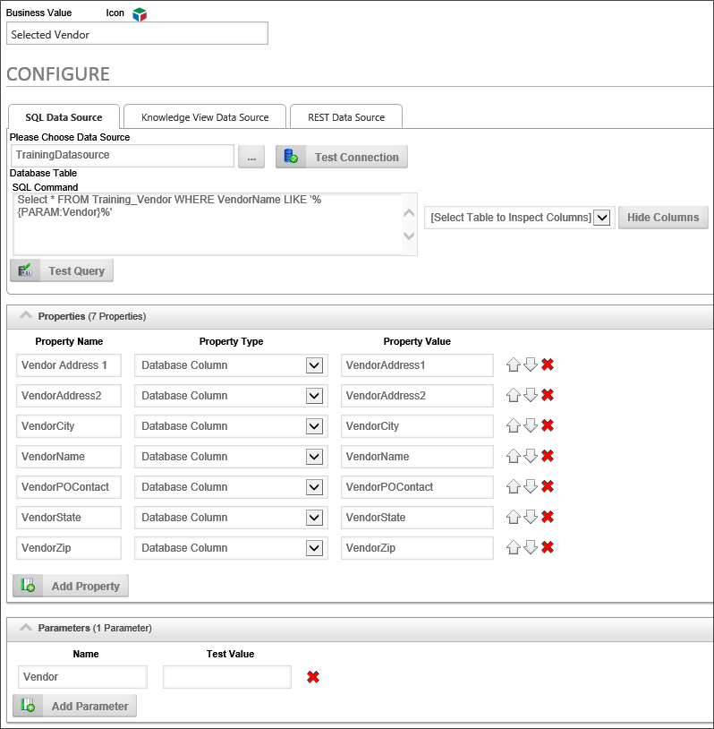
The SQL Command for this Business Value retrieves records for our vendors. If no Vendor parameter is supplied, the command will simply pull every vendor record. If the Vendor parameter is supplied, Business Value will return only a single record. In other words, the same Business Value can return a single or scalar value based on the parameter. For each record returned, the Business Value uses the database columns to create several properties that all contain values extracted from the database
Once we have created the Business Value, it's accessible by all other objects in Process Director. None of your business users or other implementers need to know anything about how the data is configured to use the business value, because the Business Value properties are available through the condition builder dropdowns. They merely need to select the properties they want.
For instance, let's say there's a Form that has a dropdown control for picking a vendor. Using the Business Value, you can automatically fill some Form fields with the vendor's address and contact information by using the dropdown's value as the Vendor parameter, and passing the parameter to the Business Value.
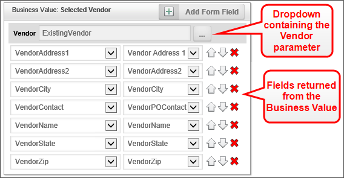
Once the Business Value exists, implementers no longer need to create a Custom Task to retrieve the data. They no longer need to know or care about the database schema or the SQL syntax to retrieve the data they want. All they need to do is set the Business Value property they want, and in the case of the example above, pass the correct parameter to it. This functionality greatly reduces the level of technical knowledge that business users and implementers need to conduct relatively sophisticated data retrieval operations. With Business Values, technical details about the data, and how to acquire it, is largely irrelevant to implementers. The only person who needs to have any sort of technical knowledge about the database is the creator of the Business Value itself.
In addition to retrieving data from an external database, a Business value can also return data from a Knowledge View, or from a REST web service.
When returning data from a Knowledge View, a Business Value can perform the calculations on Knowledge View Columns that return numeric values:
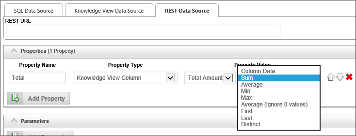
When returning Values from a REST web service, the Business Value uses XPath to enable you to specify the XML path to the value in the Web Services. For example, let's assume a REST service returns the following results:
The Business Value would use the following configuration to retrieve the results from the REST service.
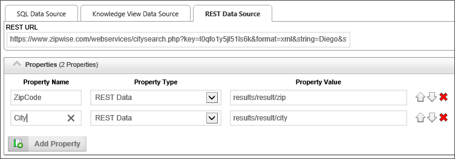
To create a new Business Value, navigate to the folder into which you want to create the value, then select "Business Value" from the Create New dropdown in the upper right corner of the Process Director screen.
The Create Business Value screen will appear. Enter a name in the Business Value Name field, then click the OK button to save the new Business Value and open the definition.
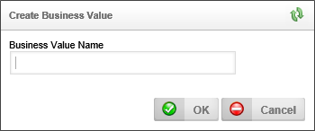
In the Properties tab, be sure to set the Group in Value picker property to specify the menu group in which the Business Value will appear in the System Variable dropdown menus. . This property enables you to organize Business Values into logical groups that will display as submenus in the properties dropdown menus that display in the Condition builder and elsewhere. This feature operates in the same way as it does for Business Rules.
In the Configure tab of the definition, there is a tabbed section that specifies the different types of Business Value you can create. You can create a SQL, Knowledge View and/or a REST Business Value. In most cases, you will choose a single data source, but you can have multiple values extracted from different data sources. We will address each type of data source individually.
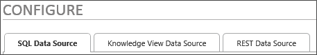
The SQL Data Source tab enables you to select a Datasource object that connect to some SQL data in any SQL-compliant database, e.g., SQL Server, Oracle, etc. Using that Datasource, you can provide a SQL Command to returning data from the SQL database.
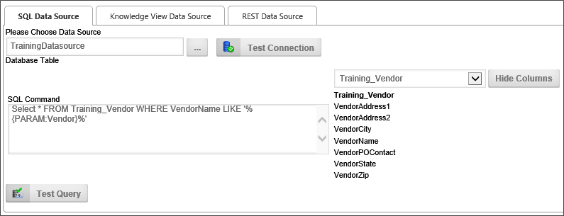
The following properties are configurable:
A Content Picker control that enables you to pick the Datasource from which the data will be extracted.
Enter the SQL command that will select the data to be set as the business value. While the system will accept any valid SQL command, BP Logix very strongly recommends that you limit the use of Business Values to SELECT commands. Updating, deleting, and inserting data should be done separately, through the appropriate Custom Task/Datasource, such as the SQL Command Custom task.
The Knowledge View Data Source tab enables you to select a Knowledge View and apply a filter for returning data from a Knowledge View.
All Knowledge View columns are available to the Business Value, including those that are marked not to display in the Knowledge View Definition.
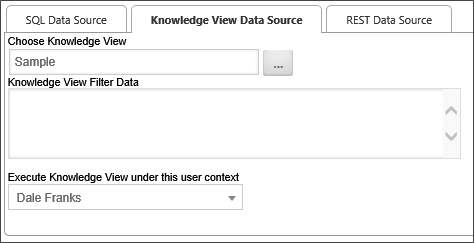
The following properties are configurable:
A Content Picker control that enables you to pick the Knowledge View from which the data will be extracted.
Enter the filter parameters in this text box to filter the data returned from the Knowledge View.
A User Picker control that enables you to pick the user under whose permissions the Knowledge View will be run. Since regular users may not have permissions to view the Knowledge view, you must pick a user who has appropriate permissions to run the Knowledge View. This will enable users with a lower permissions level to access the Knowledge View data for the Business value.
The only configurable property for the REST data source is the REST URL, which specifies the URL of the REST service, and any required URL parameters needed to return the desired REST data.
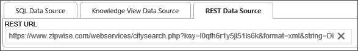
Once you have selected the appropriate data source for the Business Value from the configuration tabs, you can fill out this section by adding the properties that contain the desired Business Value or Values. Simply click the Add Property button to add a value property. The value property contains a number of fields that must be configured, and different data sources will have different configuration fields displayed, as shown below.
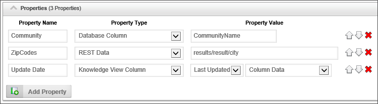
| PROPERTY | OPTIONS | DESCRIPTION |
|---|---|---|
| Property Name | The property name will appear as the Business Value property when selecting Business Values from the Condition Builder dropdown menus. | |
| Property Type | Database Column
Number of Database Rows Knowledge View Column Number of Knowledge View Rows System Variable |
The type of object from which the value is extracted. |
| Property Value (SQL) | Enter the name of the database field into the Input box. | |
| Property Value (Fields) | List of available fields | This dropdown control appears when the Knowledge View column Property Type is selected. It will contain a list of Knowledge View columns from which you can select the desired column containing the value. |
| Property Values (Aggregation) | List of available aggregation methods | This dropdown control appears when the Knowledge View column Property Type is selected. It will contain a list of aggregation functions (Sum, Average, etc.) that can be performed on the selected field. |
| Property Value (REST) | Enter the XPath to the XML node that contains the desired data, e.g., "results/result/ZipCodes" |
The properties returned by the Business Value can be ordered by using the buttons with the Up and Down arrow icons, and deleted by clicking the button with the red "X" icon.
Click the OK menu button to save and close the Business Value definition.
When a Business Value has been saved, its properties can be accessed in the Condition Builder via the system variable dropdown menu.
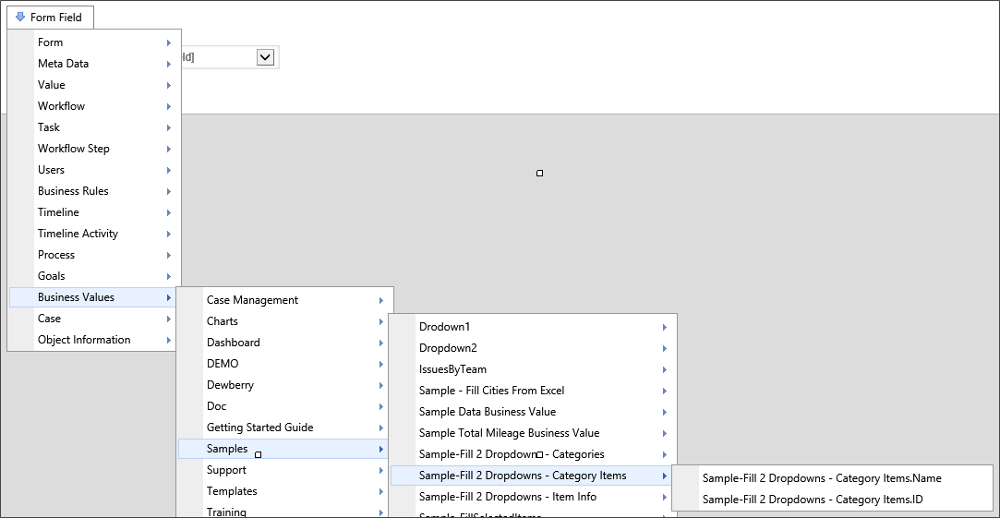
Once a Business Value has been created, it can be selected as a content type from the Content Picker control when creating Form templates. Business Values can also be accessed through a System Variable, using the following syntax:
{BUSINESS_VALUE:BusinessValue.Name, $ParameterName=Value}
The Business Value will also be correctly returned using the alternate syntax options below:
{BV:BusinessValue.Name}
{BIZVAL:BusinessValue.Name}
{BUSINESSVALUE:BusinessValue.Name}